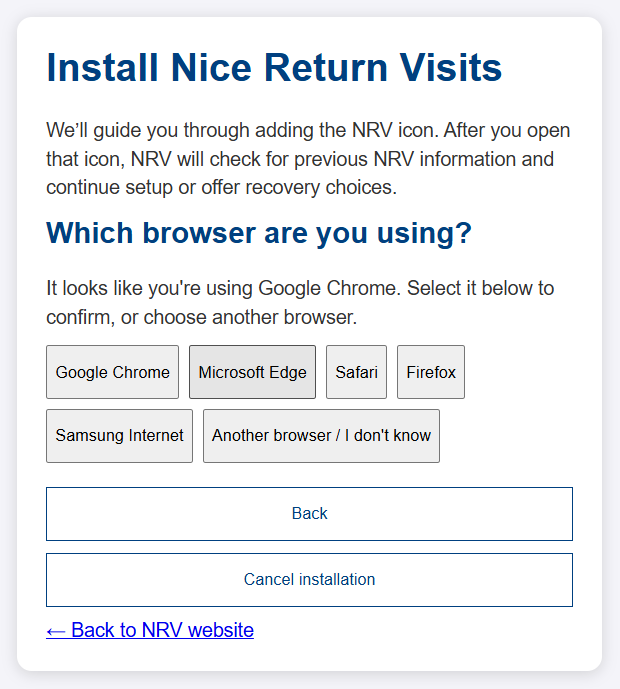

Support
Nice Return Visits user guide
Download the complete PDF guide.
Before adding your first contacts
We recommend adding an app icon to your device's Home Screen at the onset of the installation process, closing this screen and clicking the icon. When you first open the link, choose whether to set up the app icon or use NRV in the current browser. Returning to the same icon helps you use the same copy of your data.
Important: the icon is made from the page you are on when you tap Add to Home Screen. This guide page would give you a guide icon, not the app. First open the NRV app page and only then use the steps below. The icon name should read NRV.
You can also use NRV in a browser tab. Different browsers, browser profiles, devices, and installed icons may have separate copies of your contacts. Installing an icon does not transfer contacts.
If you choose the icon, follow the icon installation steps, then open NRV from that icon. The Terms of Use and Privacy & Data Notice agreement appears, followed by the next screen seeking default settings and details, then you move into adding Contacts.
Setup can offer to restore a backup file or, if it finds existing data, to use that data or erase and start fresh. Erasing removes the data in that copy, so back it up first if you need to keep it.
To wipe a copy of the app, use Settings → Data/Security → Erase All Data / Start Fresh. Set up Defaults & Your Details in Settings, then add Cities, Regions & Areas there or as needed.
If you have already added contacts via NRV from a browser: A Home Screen icon may use a separate copy. If your existing browser contacts do not appear in the new icon, transfer them. To move them, back up your browser copy, then restore that backup to the app icon. After confirming the contacts appear, use the icon consistently and stop using the browser copy for this app.
Open the installation guide in the browser you want to use. Select your device, then confirm the suggested browser or select another. Follow one step at a time; choose I don't see it when offered for help finding a control. Use Back, Cancel installation, or the website link to leave. If the selected browser differs from the one detected, open NRV in the selected browser and start again, or continue if detection was wrong. After installation, close the browser page and open NRV from its new icon to continue setup or recovery.
Start the NRV installation guide

Browser-specific quick reference
Use the interactive guide for one step at a time and help finding each control. Browser labels can vary by version. Open the NRV app page, not this Help page, before installing.
- iPhone or iPad, Safari: use a normal tab. Tap Share (square with an upward arrow), then Add to Home Screen; turn on Open as Web App if offered and tap Add. If Share is hidden, check the three-dot menu; if the home-screen action is missing, scroll down or use Edit Actions (on iPad, View More if offered).
- Android, Chrome: tap the three dots, then Install app, or Add to Home screen if that appears instead. Confirm Install or Add.
- Android, Edge: tap the three-line menu at the bottom, then Add to phone; choose Install app rather than Create shortcut if asked. Confirm.
- Android, Firefox: tap the three dots, then Install. Confirm if asked.
- Android, Samsung Internet: tap the three-line menu at the bottom, then Add page to, then Home screen. Confirm if asked.
- Windows, Mac or other computer, Chrome: click the three dots at the top right, then Cast, save, and share → Install page as app. Click Install.
- Windows, Mac or other computer, Edge: click the three dots at the top right, then Apps → Install this site as an app. Click Install.
- Mac, Safari: click File → Add to Dock, then Add. If unavailable, update macOS and Safari or use Chrome.
If a mobile menu is hidden, tap the page and look at the top or bottom of the browser; scroll or swipe the menu. If the desktop menu option is missing, look for an install icon at the right of the address bar or reload in a normal window. For unsupported combinations, use Safari on iPhone/iPad or Chrome on other devices and restart the guide.
Once the icon is ready, open Nice Return Visits and continue through the NRV-Install setup. Choose Set up Defaults & Your Details to enter your location defaults and any personal details you want to use. You can add locations in Settings → Cities, Regions & Areas now or later. The icon does not replace a backup. Cloud backup via Dropbox and data encryption via passphrase are both optional safeguards; use the Settings gear to set up, review, or change these choices at any time.
What this app does
NRV is designed specifically to help our brothers and sisters, Jehovah’s Witnesses, keep track of and organize the return visits they follow through on in their preaching work. The app is provided as-is. Your internet or mobile provider may charge for data, and third-party services have their own terms.
The app helps you organize contact details and visit notes, find contacts by name or location, view contacts on a map, and print contact information.
Important: where your information is kept is your choice
Contacts and settings are first saved in the browser or installed app on the device where you use it; different browsers, profiles and installed icons may have separate data. Where else they exist is your choice. If you connect your own Dropbox, backups are stored in your Dropbox account, so your data is held there as well as on your devices. If you send a backup or contact file by email, messaging or a cloud folder, the data leaves your device and sits wherever that service stores the file until you delete it, and it is not on the receiving device until the file is opened and restored. Files are readable by anyone who obtains them unless you encrypted them. See Cloud backup and sync (optional) and Syncing between devices.
Before changing devices or browsers, clearing browser data, or removing and reinstalling the app, make a backup (encrypted or not, your choice). Local records may become unavailable after these changes. A full backup includes everything stored in the app: your contacts and visit notes, your Defaults, Your Details (including your home pin), and your Cities, Regions and Areas. To use your information again, restore the backup on the device where you reinstall or open the app. Step-by-step instructions are in Protect your information and make a backup.
If you have contacts in more than one browser or app copy, choose one copy to keep before deleting anything. Full backups replace the destination data; they do not merge copies. To combine several collections, use one copy as the base and import individual contacts from the other copies. Verify the combined records, then make a fresh backup before clearing unused copies. See Consolidate copies and remove unused data.
Passphrase (optional)
- A passphrase is not required. By default the app opens right away and stores your contacts on this device without encryption.
- To protect your data, open Settings → Data/Security → Passphrase to Open App → Turn On Passphrase, enter and confirm a passphrase with at least 12 characters, and choose Save Passphrase. Your saved data is then encrypted, and you will enter the passphrase each time you open the app on that device and browser. The app then shows you a recovery code; see Recovery code below.
- If you turn a passphrase on, keep it and your recovery code somewhere safe. If you lose both, the app cannot unlock that device's encrypted contacts.
- A passphrase does not sync or restore contacts by itself. To recover your contacts after reinstalling the app or to move them to another device, you need a backup (a file, or Dropbox). See Protect your information and make a backup.
Change your passphrase
If a passphrase is on, after unlocking this copy of the app, open Settings → Data/Security → Passphrase to Open App. The section says you may change the passphrase or turn it off. Choose Change Passphrase, enter your current passphrase, then enter and confirm a new passphrase of at least 12 characters. The app re-encrypts this copy's saved contacts and settings with the new passphrase. This does not change other browser or Home Screen copies, or the passphrase on backup files you already exported. Keep using the old passphrase for those existing backups; a new backup will use the new passphrase.
To stop using a passphrase, open Settings → Data/Security → Passphrase to Open App and choose Turn Off Passphrase. The app first explains what this means: your data is stored without encryption, the app opens without asking for a passphrase, your recovery code stops working, and backups you make afterward are not encrypted. Choose Continue to go on or Cancel to keep the passphrase. If you continue, enter your current passphrase once to finish. You can turn it on again at any time.
Recovery code
When you turn a passphrase on or change it, the app shows a recovery code once. It looks like ABCDE-FGHJK-LMNPQ-RSTUV-WXYZ2. Write it down or save it somewhere safe, away from your device, and keep it private; anyone who has it can open your data.
- If you forget your passphrase, type the recovery code in its place on the unlock screen. After you are in, open Settings → Data/Security → Passphrase to Open App and choose a new passphrase; you can enter the recovery code as the current passphrase. You will get a new recovery code.
- Encrypted backups that contain recovery metadata can be restored with the recovery code valid when that backup was made. Older backups may not have a recovery code.
- Changing your passphrase makes a new code, and the old one stops working. If you lose the code but still know your passphrase, open Settings → Data/Security → Passphrase to Open App → Recovery Code and choose Make a New Recovery Code.
- If you already had a passphrase before this feature, use that same button once to make your first code.
Add and organize contacts
- Choose the blue + button at the top of the contact list, enter a first name, choose a country, and select or add a city. These are required; last name and other details can be completed later.
- Email and phone are optional. Enter an email such as name@example.com. Phone numbers are formatted as (555) 123-4567; enter a 10-digit U.S. number, or include a leading 1 for a U.S. country code.
- New contacts start with the City, State / Province, and Country saved in Defaults. You can change these for each contact without changing your Defaults or other contacts. Region and Area become available after choosing a City, and each is optional; choose None for either one when it does not apply. The Country list includes Canada, Mexico, United States, saved custom countries, and + Country to add another. Choose a saved city or select + Add City and enter its name. The Region and Area lists each include a + Add New... choice so you can add those locations without leaving the form. A Region is typically a large part of a city, and an Area is a neighborhood. The same Region or Area name can be used in more than one city; the City you choose makes it unique.
- In Settings, Cities, Regions and Areas are each listed once. Use Edit beside a Region or Area to rename it everywhere and choose which cities it is assigned to; use Edit beside a City to rename it. Delete is blocked while any contact uses the location; reassign those contacts first. Deleting a City that has no assigned contacts also removes its Region and Area assignments, after you confirm.
- Different contacts may have the same name. The app assigns each contact a permanent ID to tell them apart.
- Choose Save (the disk icon at the bottom of the editor) to keep your changes. The + icon next to the title starts another new contact without leaving the editor, and the arrow icon in the bottom bar opens Google Maps directions. To edit an existing contact, use the pencil/edit action on its contact card.
- If you choose the × or close the editor after making changes, the app asks whether to leave without saving. Confirming discards those changes; canceling keeps the editor open.
- Use the round blue Map pin in the bottom navigation to view contacts that match the current search and filters and have map coordinates. Changing the search or filters also updates the map. Contacts with saved coordinates show their pins. For contacts without coordinates but with a City, the map looks up that City and State and Country and shows an approximate city pin. Tapping a pin opens contact details with Edit Contact and Get Directions buttons. When you open the Map, the browser asks for location permission and, if allowed, shows your live position as a blue dot while the Map is open. If there are no contact, home, or live-location pins, the map also centers approximately on the Default City, State, and Country saved in Settings.
- In Settings → Defaults & Your Details, Your Defaults stores your country and default city and state. Your Details stores your name, location, address, and home pin. When leaving, choose Save Changes or Discard Changes if you made changes. The country, state, and city in Defaults are starting values for new contacts. Your home shows on the Map as a purple house icon (drag it to adjust), the Map opens fitted to include it, and your name is added as “Shared by [your name]” to the message when you choose Share on a contact. The app prepares the message; you decide whether and to whom to send it. Your address and home pin are not included in that message. The address lookup button sends your address to OpenStreetMap Nominatim only when you choose it. Your details stay on this device and are included in backups.
In the contact form, choose Use Address Entered to look up a location using OpenStreetMap Nominatim. Choose Use Device Location instead to request the phone's current location. GPS uses the device's location, not the contact's address, and its accuracy can vary. The form shows the GPS-reported accuracy when available. Typing or saving an address does not run a lookup or create a pin automatically. Street addresses and newly entered location names are capitalized when you leave the field or save. Recognized U.S. state names are saved as standard two-letter abbreviations, and state codes are uppercased. Once a pin is set, choose Confirm pin is correct and the coordinates and map are hidden, leaving a short "Map pin set" line. They return when you choose Adjust pin, use a location button, or change the street address, city, or state.
- If a partial street address has multiple possible matches, choose the correct street from the street-name list; choices omit house numbers and ZIP codes. Selecting a match fills in the street name using abbreviations such as Av and Ct, and places a pin. Contact addresses use abbreviated street suffixes throughout the app, including contacts saved earlier (for example, Avenue as Av and Road as Rd). If the full address is not found, the app also searches by the street name without its leading house number. You can choose a city without entering a street to place an approximate city pin. If you need a more precise result, enter a nearby cross-street or intersection and search again. These searches send the entered location text to OpenStreetMap Nominatim only after you choose the lookup button.
- Contacts saved without coordinates can appear at an approximate city pin when an online city lookup succeeds. Reopen a contact and use Use Address Entered to add a more precise pin.
- The Map page opens zoomed to show every pin it will display. It shows the same contacts as the contact list, so the search and filters at the top apply to the map too; change them and the pins update.
- Both methods place a pin that you can refine. Tap another point on the contact form map, drag the pin, or edit the latitude and longitude fields. You can do this while adding or editing a contact. You can also drag an existing contact's pin on the Map page; its new coordinates save automatically.
- Check that the pin is in the right place before choosing Save (the disk icon at the bottom of the screen). Address lookup may not identify the exact entrance or building; device location may also need manual adjustment.
Map tiles also need an internet connection. Coordinates are optional, so you can save a contact without a pin and add coordinates later.
Find contacts and record visits
- Use the search box to search names, email addresses, phone numbers, addresses, or visit notes.
- Narrow the list with urgency, City, Region, or Area filters. Sort by newest, oldest, or name. Date sorting uses the latest visit or, when there is no visit, the creation date. Clear filters to see the full contact list again.
- Choose 🧭 Navigate on a contact card to open Google Maps directions. The app uses saved coordinates when available; otherwise it uses the contact's address. The destination is sent to Google Maps, and you can use the navigation options available on your device.
- Open a contact with the pencil button, then choose Share at the bottom of the Edit Contact screen, then choose Text / SMS, WhatsApp, or Email. The selected app opens with a plain-text summary containing the contact's name and any available phone, email, address, and directions link. Before choosing the service, you can also include no notes (the default), only the most recent note, or all notes; the dialog shows how many notes the contact has. This is plain text, not an encrypted contact export. Review the message before sending; your chosen messaging or email service receives the details. For app-to-app transfer, use the contact's export action instead.
- Add a visit quickly: tap the ADD VISIT button on a contact card. The contact opens on its Visits section with the cursor in the new-visit note box; the contact's details are one tap away under Contact Info. Type a note, or change the date and time, then use the green save icon. If you leave without typing a note or changing the date, no visit is added. Tapping the pencil instead opens Contact Info, and the visit history stays hidden until you tap Visits.
- Add a visit note while editing a contact: open the contact with the pencil button, type the note, and choose Save. You can adjust the note's date and time there, and existing notes can be edited or deleted from the same screen. Contact cards on the Contacts page show the last visit date, the number of notes, and the newest note's text. A search that matches only a visit note shows "Matches a visit note" on the card.
- To dictate a note instead of typing, tap the microphone key on your phone's or tablet's keyboard while the note field is selected. On iPhone and iPad it is at the bottom of the keyboard (turn it on in Settings → General → Keyboard → Enable Dictation if you don't see it). Android keyboards have a similar microphone key. The app does not record audio itself; dictation is handled by your device, which may send speech to Apple or Google depending on your device settings.
- Urgency is based on the most recent visit (or the contact's creation date if there are no visit notes): Normal is 0-7 days, Urgent is 8-14 days, and Immediate is 15 or more days.
Time in Service (optional)
- Go to Settings → Time in Service and turn on Track Time in Service. A Time button (⏱️) then appears in the bottom bar.
- Tap the Start Time button on the Contacts screen, between Add Contact and the import icon. While time is being counted it is green and says Stop Time; when stopped it is red and says Start Time. A running timer keeps counting if you close the app, and a small dot on the Time button reminds you it is on. When you reopen the app after being away, it asks whether to keep time going or stop the timer at the last time you were in the app.
- Today's time starts over at midnight. A timer left running past midnight is split between the two days.
- You can add time you forgot to count, and edit or delete any entry. The month and service-year totals are calculated from your entries and cannot be edited.
- Optionally show the hours to go toward 50 hours each month and 600 hours for the service year, which runs September 1 to August 31.
- Turning Track Time in Service off erases all recorded time. The app warns you first.
- Your time is saved on your device with your other information, and is included in backups and Dropbox copies if you use them.
Print contacts
- Every print button is the printer icon in the bar at the bottom of the screen, and it prints what is on that page. On the contact list it prints the contacts currently shown; search terms and filters determine what is included. The icon shows how many contacts will print, and the app confirms before printing.
- On the Map page, the printer icon asks whether to print just the numbered pins and addresses, or the pins with contact details. The numbers match the numbers on the map pins. Contacts without a pin are listed separately at the end.
- On the Settings page, the printer icon prints your settings: default country, state or province, and city, whether a passphrase is on (never the passphrase itself), and your cities, regions, and areas.
- A list print includes each contact once, grouped under its most specific location: Area, or Region if there is no Area, or City if there is no Region or Area. Contacts without any of these are grouped under "No location assigned." Each contact's list entry includes its available phone and email details and only its latest note.
- To print one contact, open that saved contact and choose the printer icon at the bottom. Choose the most recent note only (the default) or all notes.
- Save contact edits before printing. If the printer icon is unavailable while editing, save your changes first. Printing opens your device or browser's print options; saving as a PDF may be available there.
Protect your information and make a backup
Your contacts and settings are stored in this device's browser, and are encrypted if you have turned on a passphrase. They are not uploaded to an account and are not automatically backed up unless you turn on the optional cloud backup. Clearing browser data, losing the device, or forgetting the passphrase (if one is on) can make the local records unavailable. Make backups regularly and keep them somewhere safe.
A full backup is complete. It contains all of the information the app stores: your contacts and visit notes, your Defaults (country, state and city), Your Details (name, address and home pin), and your Cities, Regions and Areas. Restoring it brings all of these back. Exporting contacts from the Contacts toolbar creates a contacts file or a share message; it does not include settings.
- On the contact list, choose the export icon (a tray with an arrow pointing up) at the far right of the toolbar. Export all contacts shown, or choose numbers and ranges such as 3, 4-7, 9. Numbers match the current filtered and sorted list and map pins. You can export the selection to a file or share it by Text/SMS, WhatsApp or email. Large selections may exceed messaging app limits, so use a file for larger groups. If a passphrase is on, file export asks whether to encrypt; it is selected by default.
- You can also choose Settings → Data/Security → Backup or Restore → Local Backup/Restore → Back up everything to download a full backup at any time. The top of that section also shows whether your browser has agreed to protect the app's storage from being cleared; backups are still recommended either way.
- To move your full collection to a new device, open the app there and choose Restore from a backup file during setup or use the restore option in Settings. Select the backup and, if it is encrypted, enter the passphrase used when it was created.
- Restoring a full backup replaces the contacts and settings currently on that device, including its Defaults, Your Details and locations. Check the confirmation carefully before continuing.
- Protection when restoring a backup. Restoring an encrypted backup onto a device that has no passphrase turns the passphrase on there (after a message and your confirmation), using the backup's passphrase and recovery code. Restoring an encrypted backup onto a device with a different passphrase switches that device to the backup's passphrase and recovery code. Restoring an unencrypted backup onto a device that has a passphrase keeps that device's own passphrase and protects the restored data with it. After you change your passphrase on one device, the others keep the old one until they restore a newer backup, which needs the new passphrase or new recovery code.
- To export one contact, open it with the pencil button and use the export icon at the bottom of the Edit Contact screen. If this copy has a passphrase, create a separate transfer passphrase of at least 8 characters for the encrypted file; give it to the recipient through a different channel. If this copy has no passphrase, the file is unencrypted and readable by anyone who obtains it. To choose between encrypted and plain export, use the contacts-list export instead.
- To import one or more contacts, choose the import icon (a tray with an arrow pointing down) at the far right of the contacts toolbar and select one or several contact files. You are asked for a passphrase only if a file is encrypted. A selection of several encrypted files uses the same entered passphrase for all of them; import files with different passphrases separately. Importing adds the contacts without replacing any existing ones.
Cloud backup and sync (optional)
Cloud backup keeps a copy of your contacts and settings in your own Dropbox account, outside your device. If your device is lost, broken or replaced, you can restore from Dropbox instead of needing a file you saved earlier. If you connect more than one device to the same Dropbox, it also keeps them in step (see Syncing between devices). It is off unless you turn it on. Dropbox is entirely optional. File backups work either way. Other features such as map lookups, directions, sharing, and printing can send selected information to other services or destinations.
You need a Dropbox account. The app can send you to Dropbox to sign up, but it cannot create the account for you. The free Basic plan is enough. Dropbox may offer a paid trial; you can skip it.
Turn it on
- Open Settings → Data/Security → Backup or Restore. It starts by telling you which method you are using (Local by default). Tap Switch to Dropbox cloud backup, then open Cloud Backup/Restore (Dropbox) and choose Set Up Cloud Backup.
- Choose Yes, I have one if you already have a Dropbox account. If not, choose No, help me get one and follow the steps: open dropbox.com/basic, sign up, choose the free Basic plan, confirm your email if asked, then come back to the app and choose I Have My Account, Continue.
- Choose Connect to Dropbox. Sign in to Dropbox when it asks and tap Allow. The app can only use its own folder named Return Visits, and cannot see anything else in your Dropbox. Dropbox then sends you back to the app.
- If Dropbox already has a backup, read the restore or replace prompts carefully. Restoring replaces this copy; replacing uploads this device's data over the latest Dropbox copy. Cancel if unsure. If no backup exists and this copy has contacts, the app makes a first backup; an empty copy waits until contacts are added.
How it works
- The app checks Dropbox when you open it, and backs up about 15 seconds after you make changes or as you leave the app. While it is open it also checks every couple of minutes. A web app cannot back up while it is closed, so this happens when you use it.
- Dropbox keeps a latest copy plus up to 10 dated copies (at most one new dated copy per day). Older dated copies are removed automatically. Each dated copy is a separate .json file in the Return Visits folder, named with the date and time it was made, so you can choose an earlier copy under Restore from Dropbox. When you tap Back Up to Dropbox Now, a message above the buttons shows the progress and then confirms the backup.
- Encryption: if a passphrase is on, backups sent to Dropbox are encrypted with it. Without a passphrase the backups in your Dropbox are not encrypted. Before connecting, the app explains the protection for this copy and lets you continue or cancel. A passphrase is optional; you can choose whether to turn it on in Settings → Data/Security → Passphrase to Open App. Your Dropbox sign-in is separate from your app passphrase. Copies saved before you turned a passphrase on stay unencrypted until you delete them or Dropbox removes them.
- To restore, choose Settings → Data/Security → Backup or Restore → Cloud Backup/Restore (Dropbox) → Restore from Dropbox, pick the latest copy or a dated one, and confirm. Restoring replaces the contacts and settings on this device. If the backup is encrypted, you enter its passphrase or recovery code.
- Back Up to Dropbox Now makes a backup immediately. Disconnect Dropbox stops backing up; your existing copies stay in your Dropbox. To remove the app's access completely, remove Nice Return Visits from the connected apps list in your Dropbox account.
- Automatic backup does not run when this device has no contacts. Read any manual backup or replace confirmation carefully.
- Using more than one device is covered next, under Syncing between devices.
Syncing between devices
Syncing is part of Dropbox backup. If you do not connect Dropbox, nothing syncs: your contacts stay only on that device, and each device is separate. If you connect compatible copies to the same Dropbox, they can combine changes when connected and synchronization is not paused.
A passphrase is optional. For encrypted synchronization, restore the protected backup on the other device so it receives the same protection metadata, passphrase, and recovery code. Independently turning on an identical passphrase may not produce compatible copies.
Setting up a second device (for example an iPad)
- On your main device (the one that has your contacts), make a file backup first. If you want encrypted Dropbox copies, turn on the passphrase now under Settings → Data/Security → Passphrase to Open App and save the recovery code. Then connect Dropbox as described above and wait for the cloud icon to show it is synced.
- On the second device, install or update the app, open Settings → Data/Security → Backup or Restore → Cloud Backup/Restore (Dropbox) and connect to the same Dropbox account. Do not turn on a passphrase there first.
- When the app says Dropbox already has a backup, choose Restore, not Replace. Pick the latest copy. If it is encrypted, enter the passphrase or recovery code from your main device; the second device then uses that same passphrase and recovery code.
- Check that your contacts appear and the cloud icon shows it is synced. Check the status again after edits, and resolve any prompts before relying on the other device.
Day to day
- Each device combines with Dropbox when you open the app, about every couple of minutes while it is open, and as soon as a lost connection returns. After you make a change, wait about 15 seconds before switching to the other device.
- Compatible changes can combine contacts and visits. Deletions can propagate too; check sync status and resolve conflicts before relying on another device.
- If two devices change the very same contact at nearly the same time, the most recent change to that contact's details is used, but visits from both devices are kept.
- With no signal, your changes stay saved on the device and upload automatically when it can reach Dropbox again.
- The cloud icon at the top right shows the state: ☁️ up to date, 🔄 syncing, ⏳ changes waiting to upload, 📴 no connection (your changes are kept), ⚠️ paused and needs attention. Tap it to sync now and read the message. Check for a Newer Backup does the same from Settings.
- If a device uses a different passphrase than the Dropbox copy, the app cannot combine them. It asks whether to restore the Dropbox copy and keeps automatic backup paused until you decide. Use Back Up to Dropbox Now only if you want this device's data to replace the Dropbox copy; older dated copies stay.
- Connecting a device that already has contacts to a Dropbox that already has a backup asks whether to restore (replace this device) or replace the Dropbox copy. Choose carefully.
- Limits: a city, region or area you delete on one device can come back from another, and renaming one can leave the old name behind. Settings other than those lists come from the device that changed them last.
Backup reminder
If 10 days or more pass without a successful backup (file or Dropbox), the app asks "You haven't backed up in N days. Back up now?". It asks at most once a day. With Dropbox connected, choosing Yes backs up immediately; otherwise it opens Settings → Data/Security → Backup or Restore → Local Backup/Restore. Only a successful backup resets the count.
Consolidate copies and remove unused data
If Safari, Chrome, and a Home Screen app each have contacts, they are potentially separate local copies and do not sync, even if you use Dropbox on one of them. For regular use, choose the Home Screen app as the one copy to keep. A full backup restore replaces all contacts and settings in the destination; it does not merge two full backups.
- Decide which copy will be your permanent one. If it already contains contacts you want to keep, leave it as the destination and import other contacts into it individually. If you choose a different base copy, remember that restoring its full backup will replace the destination's current contacts and settings.
- Before changing anything, export a full backup from every copy that contains information you may need. Keep these backups until the consolidation is complete.
- Use the full backup from your chosen base copy to populate the destination, if needed. From every other copy, export contacts one at a time with the export icon in Edit Contact, or select contacts from the list using the export icon in the contacts toolbar. Then import the files into the destination with the import icon at the top of the contact list. Imports add records; they do not replace the collection.
- Review the destination for missing or duplicate contacts and confirm important visit notes are present. Contact imports may create a duplicate if the same person is already in the destination.
- Export a new full backup from the destination. Keep it somewhere safe and, if encrypted, confirm you know its passphrase before deleting any source copy.
- Only after verification, remove the unused copies using the removal instructions below. Clear data only for a source copy you no longer need. If the browser's controls do not make it clear which copy will be removed, do not clear it until you have confirmed the surviving copy still opens with all your contacts.
Full backups cannot be merged directly. If you need to bring over contacts from a second full backup, restore it in a separate copy first (replacing that copy), export its contacts as contact files, and import those files into the destination. Do not delete source data or backup files until the destination has been checked and backed up.
Stop using the app and remove its saved data
Remove unused app data
Uninstalling an icon may not erase its saved information. To remove an unused copy, open that copy and use Settings → Data/Security → Erase All Data / Start Fresh. This permanently deletes its contacts and settings. If you want to keep them, export and verify a backup first. Repeat for each unused browser or installed copy, then remove its icon if desired. Downloaded backups and exports must be removed separately.
Use the app on another device
On another device, the best approach is to add the app to your Home Screen first (see the installation instructions above). Once you have the icon, open it and use the NRV-Install screen to restore a backup file or continue setup. To use Dropbox, connect it from Settings after opening the app.
If you prefer to use a browser tab instead, you can open the Nice Return Visits app in a web browser, but your contacts will not appear automatically. To bring them over, you have two options: if you use Dropbox, connect the same Dropbox account on the new device and restore from it, after which the devices stay in step (see Syncing between devices); otherwise restore a backup file. Using a browser across multiple devices increases the risk of creating separate datasets, so plan to always use the same browser on the same device, or set up Dropbox sync as a safeguard.
The app checks for updates when it opens and prompts you once it has opened if an update is ready; an exclamation mark also appears by Settings. To check or refresh manually, open Settings → App Updates → Check for Updates & Refresh while online. If there is no update, a "No update available" message appears; tap OK to close it. The section also shows the current NRV version and What's new for that release. If the published version cannot be checked or is older than the running version, the app reports the problem rather than claiming it is current. After an update installs and the app reloads, an "App refreshed" message confirms it. Save or finish any open contact or Settings edits first; if something is unsaved, the app names the exact section and field and takes you to it. Also, if you leave Settings with unsaved edits, the app asks "Discard unsaved changes?" Choose OK to discard them, or Cancel to stay and finish. The app reloads its code without removing the contacts and settings stored in that app copy. After it reloads, unlock using the same passphrase if you have turned one on.
Already using the app in a browser?
We recommend switching to a Home Screen app icon if you have been using the app in a browser. Using the same icon consistently helps avoid accidentally working in separate copies.
The browser version and the Home Screen app may be separate copies and do not sync with each other, even if you use Dropbox in one of them. If you add the app to your Home Screen, it will not transfer the data already saved in your browser; the two versions may keep separate local copies. To move your contacts from your browser to the new icon, first confirm they are visible in your browser, then choose Settings → Data/Security → Backup or Restore → Local Backup/Restore → Back up everything. Open the app icon and choose Restore from a backup file during setup, or use its restore option in Settings. Keep using your browser until you have confirmed the contacts are visible in the icon. Without a shared sync setup, changes made in one copy will not appear in the other.
If you must continue using a browser: You can connect Dropbox to your browser tab, and if you add a Home Screen icon, you can connect the same Dropbox account to it as well. They can sync through Dropbox when connected and compatible—see Syncing between devices for details. Dropbox sync is a workaround that helps keep browser and icon versions in step, but the icon alone remains the most reliable approach.
The app is free to use and has no sync service of its own. Syncing happens only if you choose to connect your own Dropbox on each device (see Syncing between devices). Without Dropbox, copies may be separate: keep track of which one has your latest changes, and move changes by exporting and restoring a backup file. Restoring a full backup replaces the destination copy's contacts and settings.
Troubleshooting and offline use
- Missing contacts: clear search and all filters. Confirm you opened the same browser, profile, device, or installed icon. If the correct copy is empty, locate a backup before restoring; a full restore replaces the destination.
- Cannot unlock: check the passphrase for this copy or enter its current recovery code. A backup may have a different passphrase or recovery code. Without the matching secret, encrypted data cannot be opened.
- Backup will not restore: confirm it is a full NRV JSON backup, use the secret for that backup if encrypted, and update NRV if it says the file was made by a newer version. Keep the original file and check the message if restoration fails.
- Dropbox is offline or paused: local edits remain on the device. Reconnect and read the cloud status. If prompted to restore or replace, back up both copies first and read which one will be overwritten.
- Map or location fails: check your connection and device permissions; try an address, a cross-street, or place a pin manually. City pins and device location can be approximate.
- Storage or updates fail: do not clear browser data as a first step. Save your work and a backup if possible, check storage permissions and available space, then retry. Finish open contact or Settings edits before refreshing.
- Offline: after the app has cached its files it may open offline. Map tiles, address lookups, directions, Dropbox, and other external resources need a connection. Local changes can sync when connectivity returns.